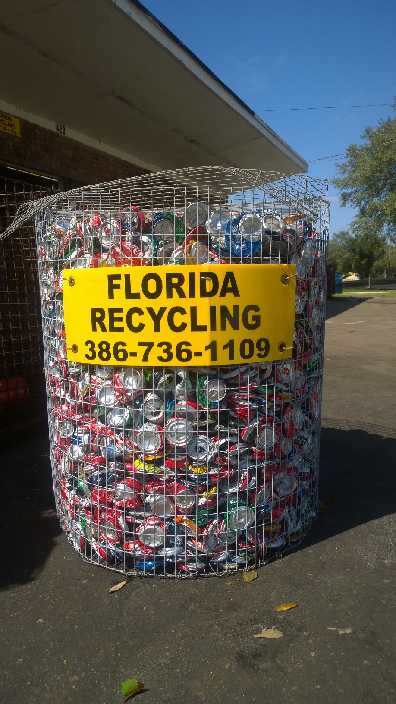

We offer the highest can prices in town, call for pricing. We accept and buy all metals, anything metal. We have loads of vintage antique metals which can be purchased, some are one of a kind hand crafted makes and some are just unique. The plus here is that we also have many parts laying around that could be used to fix up around the house. Roofing, paneling, sometimes brand new gutters, new and used ladders, bicycles for parts usually, plenty of appliances and plugs for charging phones, computers and other various devices, and various size and strengths of extension cords... and much much more. Come take a look and see what being an american picker can really feel like!

Can Basket Program
Our basket program is mainly for schools and churches and other business just like that, even boy scouts or girl scouts. We deliver a large sized basket to leave on the property of the business and once it is filled, we will come pick it up. We take it back to sort and weight the amount and a check is paid out to the business who provided them. It helps everyone especially the kids learn about recycling and keeping the environment clean. Great way to raise some funds for extra curricular activities.